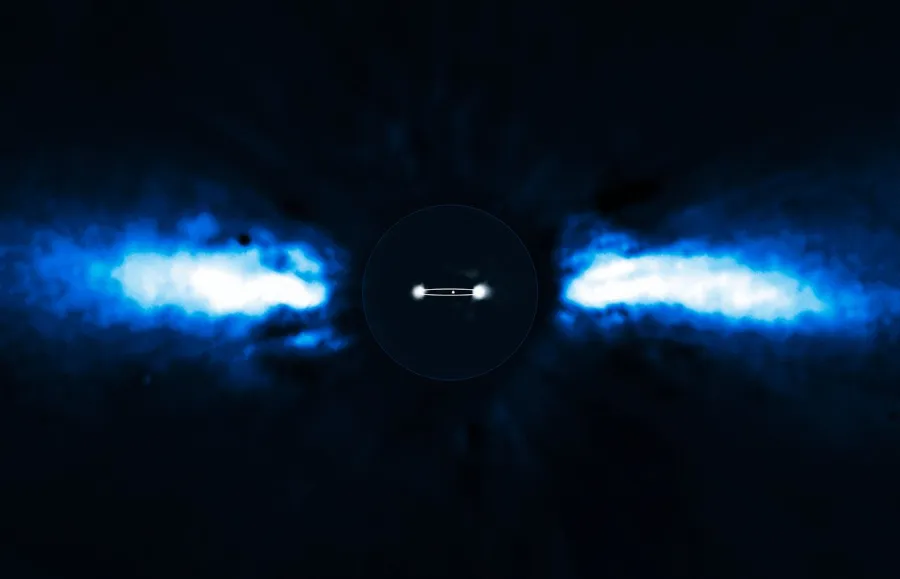

June 10, 2010
Beta Pictoris b: a planet moves to the other side of its star
Images taken in 2003 with the NACO instrument on the Very Large Telescope showed a faint source in the dust disk of the young star Beta Pictoris. In 2008 and spring 2009 it had disappeared; in autumn 2009 it reappeared on the other side of the star: proof of an orbiting planet.
Beta Pictoris b has about nine Jupiter masses and lies 8 to 15 astronomical units from its star, about as far as Saturn is from the Sun. The star, about 60 light-years away, is only twelve million years old. The discovery therefore shows that gas giants can form within a few million years.
Sources: ESO: "Exoplanet Caught on the Move", 2010-06-10; ESO: "Beta Pictoris planet finally imaged?", 2008-11-21